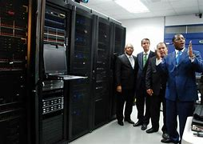

La Informatica, atraviesa transversalmente a todas las ciencias y disciplinas (Medicina, Ingenieria, Educacion, Investigacion, etc,) Nos precede 20 años en docencia y capacitacion. El equipo de docentes, capacita a nuestros alumnos con las metodologias mas avanzadas en enseñanza-aprendizaje, logrando alcanzar altos niveles de profesionalidad.

Nuestra capacitacion abarca las siguientes áreas:
Diseño WEB - 1 semestre ($5000)
Iformatica Educativa - 1 semestre ($4000)
Programacion-Desarrollo de Sofware - 2 semestres ($6000)